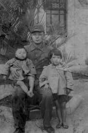
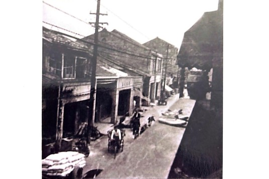
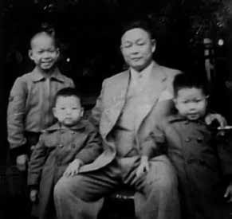
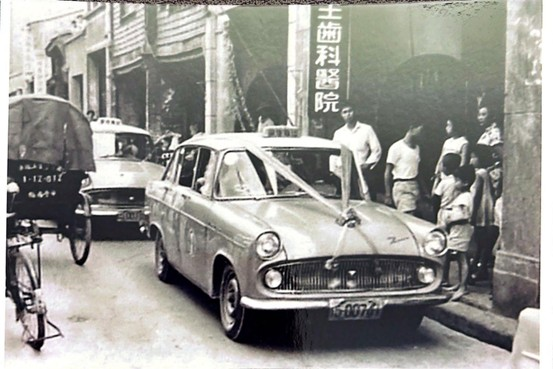
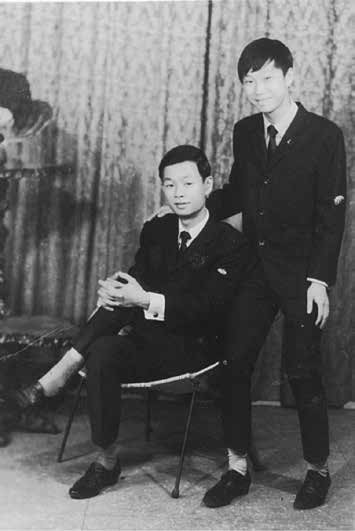

In 1937, Chi Wen-Hao’s father, who was serving as a Japanese soldier, was photographed in uniform with young children.
In the 1950s, Japanese apples were one of the most popular imported fruits in Taiwan. The trading model at that time relied heavily on trust—merchants would hand over funds to brokers, who would then arrange for goods in Japan, returning them in batches once the harvest season arrived. This trading method had been operating smoothly for many years in the Chi Wen-Hao family, with established processes and stable credibility, resulting in consistent business success.

This photo was taken in the 1950s, showing the view down from the second floor of Chi Wen-Hao’s ancestral home on Dihua Street.
In 1957, Chi Wen-Hao’s father, following years of routine, handed a considerable sum to a familiar broker named Chen, but this time it became a turning point of fate. After receiving the funds, Chen disappeared without a trace, leading to a disruption in the supply chain, unfulfilled orders, and a loss of customers, causing the credibility built over many years to collapse in a short time. Cash flow became tight, business volume plummeted, and several key executives left one after another.
In the same year, his grandmother passed away. The severe business setback and the loss of a loved one hit hard; under this dual pressure, his father's health deteriorated significantly. This was not a failure caused by a single mistake, but rather the collapse under the intertwining forces of reality.

A precious photo with his father, showing from left to right: elder brother Chi Hui-Hsiung, Chi Wen-Hao, father, and younger brother Chi Wen-Jie.
A year later, Chen finally resurfaced, only to bring more creditors who had suffered the same fate. Amidst the agitation of the crowd, Chi Wen-Hao’s father chose to step forward to calm them, believing that resorting to violence or legal action would not immediately recover losses. Instead, he decided to give Chen time to repay the debt. Thus, they established Meihua Trading Company, assigning Chen to handle the business in an attempt to exchange one last trust for a chance at recovery. However, this trust fell through once again. The company declared failure a year later.

On the wedding day of his elder sister Chi Qiu-Zi in 1962, festive wedding cars were parked in front of the first floor of the ancestral home on Dihua Street, with everyone waiting under the awning for the auspicious moment to arrive.
The hardships did not end there. Shunlong Trading was struck by a series of natural disasters. Export-bound fresh fruit had already been packed, but a typhoon delayed the shipping schedule. Without refrigeration facilities, the entire shipment spoiled and had to be discarded. As the business deteriorated, market rumors spread, employees gradually left, and debts continued to mount.
Even under such circumstances, when he was offered a high-paying position elsewhere, his father chose to remain. He believed that the business had been built by his own hands and that he could not abandon it during its most difficult period. This decision was not driven by rational calculation, but by a commitment to personal values.
In the summer of 1960, his father collapsed after suffering a hemorrhagic stroke. The family suddenly lost its primary source of income. Outside the intensive care unit, medical expenses had to be raised immediately, and his mother was forced to shoulder the responsibility of supporting the entire household on her own. Although his father survived, he was left with partial paralysis, and the path to rehabilitation was long and arduous.
As the family fortunes declined, the children were compelled to mature early and share the financial burden. His father consistently insisted that the family preserve its dignity—no matter how difficult the circumstances, their spirit must never be broken.

Chi Wen-Hao, along with his twin brother Chi Wen-Jie, at the age of nineteen; Wen-Hao is on the left and Wen-Jie is on the right.
When Chi Wen-Hao obeyed his father's orders to take down the plaque that symbolized the family's honor and removed the four golden characters "Nong Shang Li Lai," he realized at the moment the first character was taken off, exposing the back, that it was not gold but merely copper. In that moment, he truly understood the impermanence of life for the first time and made a determination in his heart: no matter how difficult it was, he had to get through this challenge.
After his father collapsed, the family business "Shunlong" also fell apart. At just twelve years old, Chi Wen-Hao began to comprehend the harsh realities of society. However, he always remembered his father's repeated admonitions — dignity and spirit are the only things that cannot be lost during difficult times.
When he grew up, he voluntarily applied to enlist early in the military to lessen the family burden. Through the rigorous training in the special forces, he learned endurance, obedience, and perseverance. This military experience not only honed his physical strength but also became the psychological foundation for his future endeavors in the business world.
His father, overwhelmed by work, collapsed in 1960, and soon after the family business "Shunlong" was declared to have collapsed, which made Mr. Chi Wen-Hao, only twelve years old at the time, experience the realities and uncertainties of society prematurely. Although life fell into distress, he always remembered his father's teachings about "dignity and spirit," and when he grew up, he proactively applied to enlist early to alleviate the family burden. Through the tough training in the special forces, he developed the resilience to face hardships and persist in everything, establishing the willpower foundation for his later ventures in the business world.